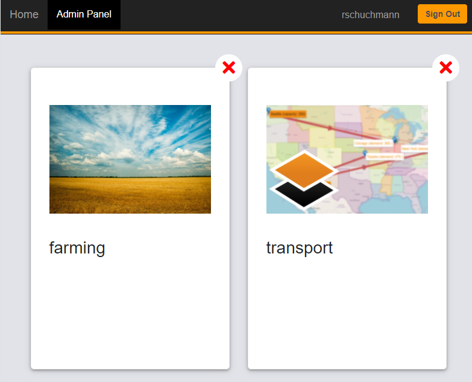
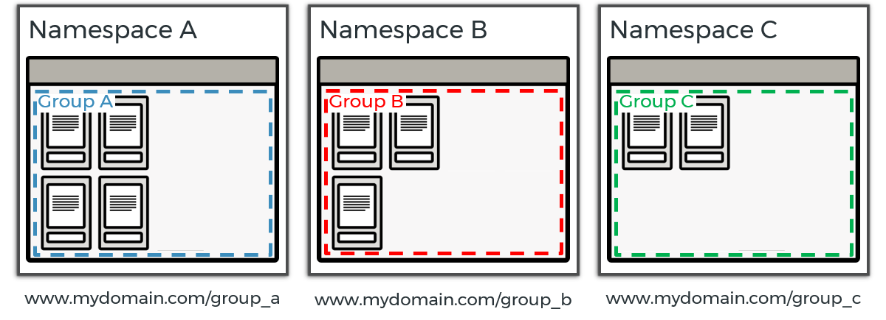

In addition to interactively managing apps and scenarios via the admin panel, this can also be done via a REST API.
Administration
User Management
MIRO Server uses the authentication service of GAMS Engine. Everyone who wants to use MIRO Server needs a GAMS Engine user account with at least execute permissions on the namespace to be used. Or the other way around: Once you are a registered GAMS Engine user with the required permissions, you can use MIRO Server. Users without permissions in the namespace can log in if they can see a user group associated with a model.
If you are GAMS Engine administrator or inviter, you can manage users and namespaces for MIRO Server directly in the Engine UI. Read more about this in the GAMS Engine documentation.
If you decide to use MIRO Server without authentication (e.g. to showcase applications as in the case of the MIRO Gallery), you need to register one GAMS Engine user with execute permissions on the namespace to be used, e.g. a user anonymous. Anyone accessing your MIRO apps will then use this GAMS Engine user under the hood for authentication. You will need the credentials of that user in step 6 of the installation. You can also provide the credentials of this user via the `.env` file in the miro_server directory:
| Environment Variable Name | Environment Variable Value | Example |
|---|---|---|
| GMS_MIRO_ENGINE_ANONYMOUS_USER | Username of anonymous user | miro_server_anonymous |
| GMS_MIRO_ENGINE_ANONYMOUS_PWD | Password of anonymous user | t@qHwt%3Mh |
If you do not provide the credentials of the anonymous Engine user, the apps can be launched but not solved/submitted to Engine.
The admin panel
Access
In the Admin panel of MIRO Server you can add new MIRO apps and delete existing ones. Among other things, access to individual apps can also be controlled here via a user group system.
A user with read, write and execute permissions on the namespace that MIRO Server uses will be considered as a MIRO Server administrator. As an administrator, the tab 'Admin Panel' is additionally displayed next to the 'Home' tab:
Tip:

A click on Admin Panel opens a overview with all deployed apps:

How to access the admin panel when using MIRO Server
without authentication:When MIRO Server is used without authentication, there is no login screen anymore. Everyone accessing the MIRO Server landing page will end up on the library. Accordingly, there is no longer a distinction between admininistrator and normal user (i.e. there is no admin panel button). In this case you can reach the admin panel via a direct link, just like with MIRO apps. The app id is admin in this case: mydomain.com/app_direct/admin/
Add apps
As with the local MIRO Desktop library, a new MIRO app (miroapp file) can be added easily via drag & drop or by clicking on the last tile:

The dialog that opens shows a preview of the deployed app including logo, title and description, which can be modified. Note that the maximum file size for the logo is 1 mb.
Further settings that can be made before adding the app:
-
Access groups (optional):
By default, any Engine user who has access to the namespace used by MIRO Server can see all apps. To limit who is allowed to use the app you want to add, you can optionally assign access groups. A user who is not a member of one (or more) of the assigned access groups does not see the app in the app overview and cannot reach it via direct link (see an example). All GAMS Engine groups of the namespace used by MIRO Server in which the MIRO administrator is a member or has access rights are available for selection. Learn how to create groups and add users in GAMS Engine. -
App environment (JSON, optional):
Here you can define a customized environment to be used by the MIRO app in JSON syntax. This can be useful/mandatory, for example, if you want to run custom analysis scripts that require external software not in the PATH or to store credentials to be used by remote data exchange modules. A detailed description including an example can be found in the MIRO Desktop documentation. The only difference to the local version is that with MIRO Server you can specify a separate environment for each app, while with MIRO Desktop this applies globally to all apps.
While the global language setting applies to all apps, the app environment can be used to change the language of an individual app. This allows the use of apps in different languages within one MIRO Server instance. The environment variable MIRO_LANG specifies the language. Available languages currently are English ('en'), Chinese ('cn') and German ('de'). Example: {"MIRO_LANG":"de"}.

When all settings are done, add the app by clicking on 'Save'. The app is then validated and added to the library.
Scenario data: All scenarios that are bundled with the app are stored in the MIRO Server database. The user who adds the app will become the scenario owner. All users with access to the app have read and execute permissions for these scenarios.
Edit and remove apps
Edit apps:
You can edit existing apps by clicking on an app tile.
This opens the same dialog as when you add a new app.
Remove apps:
To remove an app, click on the
×
icon in the upper right corner of an app tile. If you want
to keep the database with all the scenario data of the app
you want to delete, you can specify this in the following
step.
Add scenario data
In addition to the possibility of bundling scenario data with an app, scenarios can also be added subsequently by dragging and dropping the data files (gdx, miroscen, xlsx, xlsm, xls, zip) onto the respective app.
The following rules apply:
- Up to 10 scenarios can be added at once.
- Scenarios are assigned to the user who adds them.
- The scenarios are made available (read and execute permissions) to all users who have access to the app.
Access MIRO apps
MIRO Server library
The landing page of MIRO Server shows the MIRO Server library. It lists all apps that a user has access to and is very similar to the app library of MIRO Desktop. Each app is displayed in a separate tile and can be launched from there:

Direct links
In addition to the app overview of the MIRO Server library, apps can also be accessed via a direct link. There are two slightly different variants. In both variants the app id is part of the link. This id is by default the lowercase name of the main GAMS (.gms) file.
-
<miro_server_url>/app/<app_id> (e.g.
https://miro.gams.com/gallery/app/transport/):
When accessing a MIRO app under this link, the app itself will be available via an iframe. The top of the page contains the navigation bar which brings you back to the landing page of MIRO Server (library). -
<miro_server_url>/app_direct/<app_id> (e.g.
https://miro.gams.com/gallery/app_direct/transport/):
Directly access the MIRO app without the iframe and navigation bar.Info:Within the iframe that is displayed under /app/<app_id>, the /app_direct/<app_id> link is used to display the MIRO app.
Controlling app access
If several MIRO apps are used, it may make sense to make certain apps accessible only to certain users. There are two possible ways to do this.
User Groups
In GAMS Engine users can be assigned to groups (read more about user groups in the GAMS Engine documentation). These groups can be used to control who can see which MIRO app hosted on MIRO Server. In the following example, there are three groups A, B and C. Users in group A have access to 4 apps, users in group B have access to 3 other apps. Group C users can access 2 apps, one of which is also used by another group.

All users access MIRO Server via the same URL. However, as a member of a group, you don't see anything from other apps from other groups.
Tip:
A user can also be a member of multiple groups.
Creating user groups and assigning users to them is done quickly. So it's very easy to control who can access which apps with this approach.
Multiple MIRO Server instances
In this approach, users are separated from each other not by groups, but by separate MIRO Server instances. The example setup is as follows: There are 3 different MIRO Server instances, each accessible under a different URL. The MIRO server instances all access the same GAMS Engine instance, but use different namespaces. Using groups is of course still possible, but not necessary in this example.

Note:
Note that in this setup it is not possible to share individual apps with multiple groups. Apps have to be added and maintained separately in each MIRO Server instance. Except that they use the same GAMS Engine, the three instances have nothing to do with each other.